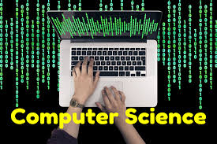

Other subjects topics:

1. Digital Logic
Boolean algebra. Combinational and sequential circuits.
Minimization. Numberrepresentations and computer arithmetic (fixed and floating point).
2. Computer Organization and Architecture
Machine instructions and addressing modes.
ALU, data?path and control unit. Instruction pipelining.
Memory hierarchy: cache, main memory and secondary storage; I/O interface (interrupt and DMA mode).
3. Programming and Data Structures
Programming in C.
Recursion,Arrays, stacks, queues, linked lists, trees, binary search trees, binary heaps, graphs.
4. Algorithms
Searching, sorting, hashing.
Asymptotic worst case time and space complexity.
Algorithm design techniques: greedy, dynamic programming and divide-and?conquer.
Graph search, minimum spanning trees, shortest paths.
5. Theory of Computation
Regular expressions and finite automata.
Context-free grammars and push-down automata.
Regular and contex-free languages, pumping lemma.
Turing machines and undecidability.
6. Compiler Design
Lexical analysis, parsing, syntax-directed translation.
Runtime environments. Intermediate code generation.
7.Operating System
Processes, threads, inter-process communication, concurrency and synchronization.
Deadlock. CPU scheduling.
Memory management and virtual memory. File systems.
8. Databases
ER?model.
Relational model: relational algebra, tuple calculus, SQL.
Integrity constraints,normal forms.
File organization, indexing (e.g., B and B+ trees).
Transactions and concurrency control.
9.Computer Networks
Concept of layering. LAN technologies (Ethernet).
Flow and error control techniques, switching.
IPv4/IPv6, routers and routing algorithms (distance vector, link state).
TCP/UDP and sockets, congestion control.
Application layer protocols (DNS, SMTP, POP, FTP, HTTP).
Basics of Wi-Fi. Network security: authentication, basics of public key and private key cryptography,
digital signatures and certificates, firewalls.